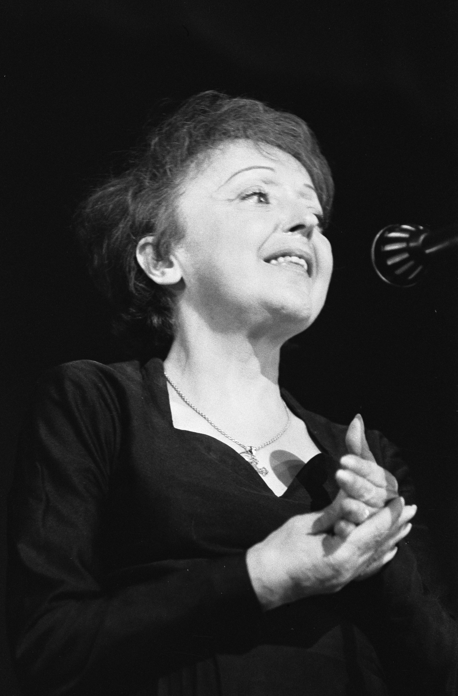
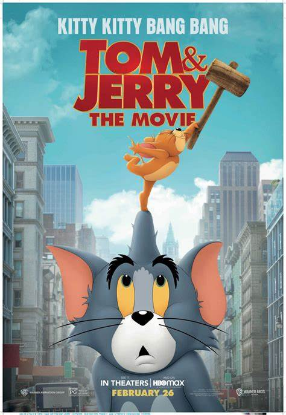

Buna! Ma numesc Karina. Am 11 ani si sunt in clasa a V a la Colegiul National din Iasi. La scoala, materiile mele preferate sunt istoria, romana si geografia insa imi plac si limbile straine, biologia si, mai nou, informatica. Pasiunea mea este cantatul. pe viitor, deoarece imi place sa fiu pe scena vreau sa fiu cantareata, bineinteles sau actrita.Prietenele mele cele mai bune sunt Ilinca, Ilinca, Ilinca si Diana. Imi place sa imi petrec timpul cu ele in orice fel.
Sursa informatiilor Filmul meu preferat este "Tom & Jerry"
